DAY1 前半 / 超・初心者向け
AIは「何でも知っている魔法」ではなく、
仕事を手伝う“めちゃくちゃ速い助手”
横文字はあと回し。最初に覚えるのは「何ができるか」「どう頼むか」「間違ったらどう直すか」の3つだけです。
AIは、人間の知的な働きを再現する技術です。
生成AIは文章や画像などを作り、ロボット分野にも活用されています。
上手に使うには、目的と必要な情報を簡潔に伝えることが重要です。
1
まず「AIって何者？」だけ分かればOK
① AIってなに？
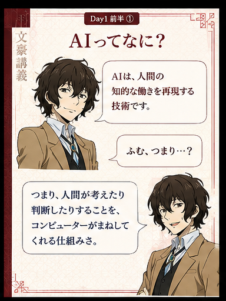
Day1前半① AIってなに？
一言なら「人が頭を使ってやる作業を、コンピューターにもやらせる技術」。 難しい数式を覚える必要はありません。
👁 見る写真の中の人や物を見分ける。
👂 聞く声を文字にしたり、言葉を聞き分ける。
🧠 考えるデータから「次はこうなりそう」を予測する。
💬 言葉を扱う質問に答える、要約する、翻訳する。
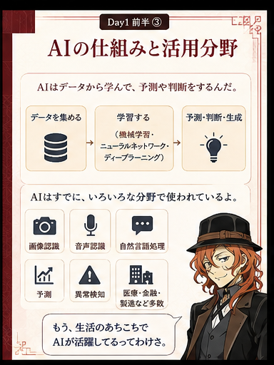
Day1前半③ AIの仕組みと活用分野
歴史はざっくり3回の波。細かい年号を暗記するより「昔から研究され、今は大量データと高性能PCで一気に実用化が進んだ」と理解すれば十分です。
1950〜60年代探索・推論
1980年代専門家の知識を入れる仕組み
現在機械学習・ディープラーニング
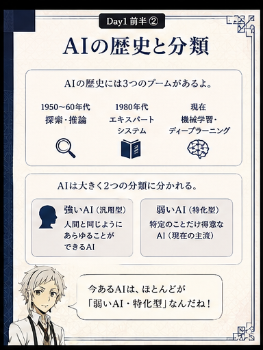
Day1前半② AIの歴史と分類
太宰「AIって、人間より全部賢い機械ってことでいいの？」
中也「雑すぎんだろ。得意な仕事を高速でやる道具だと思え。今のAIにも苦手は山ほどある。」
敦「“万能な頭脳”より、“得意分野を持つ助手”と考えると分かりやすいですね。」
② 生成AIとLLMってなに？
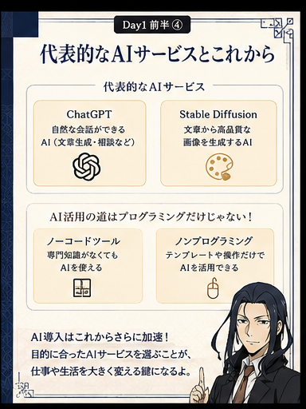
Day1前半④ 代表的なAIサービスとこれから
生成AIは「新しく作るAI」。文章・画像・動画・音声などを、指示に合わせて作ります。
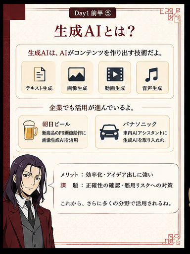
Day1前半⑤ 生成AIとは？
文章ChatGPTやGeminiで、文章作成・要約・相談。
画像文章からイラストや写真風画像を生成。
動画・音声映像案、ナレーション、音声生成など。
仕事企画の叩き台、メール、調査、翻訳の補助。
LLM（大規模言語モデル）は、ものすごく大量の文章を学び、「この次にはどんな言葉が来そうか」を予測しながら文章を作る仕組みです。人間のように会話して見えても、自信満々に間違うことがあります。
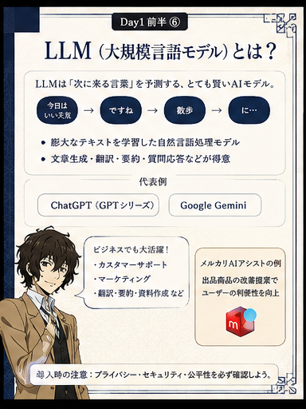
Day1前半⑥ LLM（大規模言語モデル）とは？
ここだけ注意：AIの答え＝正解ではありません。住所・金額・法律・医療・契約など重要な内容は、元資料や公式情報で確認します。
谷崎「じゃあ、“町内会のお知らせを読みやすくして”みたいなお願いもできる？」
与謝野「できるよ。ただし、人名や日付を勝手に変えてないか最後に確認。そこまでがセットだね。」
③ AIはロボットにも使われる
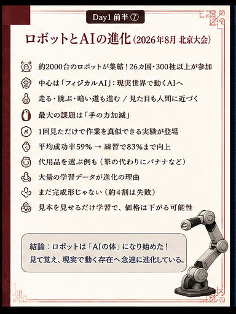
Day1前半⑦ ロボットとAIの進化
チャットAIが「頭」だとしたら、ロボットはAIに目・手・足を付けたものと考えると簡単です。
- カメラで周囲を見る
- AIが「何があるか」「次に何をするか」を判断する
- モーターやロボットアームを動かす
- 人の動きを見て、作業をまねる研究も進んでいる
ただし、柔らかい物を壊さず持つ、予想外の状況に対応するといった、人なら何気なくできることはまだ難しい部分があります。
敦「つまり、ロボットがAIそのものなんじゃなくて……」
森「AIが判断役、ロボットが現実世界で動く役、と分ければ理解しやすいね。」
④ AIに仕事を頼む基本は4ステップ
難しいプロンプト術より、普通の仕事の頼み方でOK。
1目的何をしてほしい？
2材料何を見てほしい？
3条件誰向け・長さ・形式は？
4修正違う所だけ直してもらう
△ 伝わりにくい
「これ、いい感じにして」
◎ 伝わりやすい
「この文章を、70代の人にも分かる言葉で、300字以内に短くして」
太宰「察してくれ、で通じないの？」
中也「人間相手でも通じねぇよ。目的と材料と条件を言え。」
2
次は実際にGeminiへ頼んでみる
⑤ AIを難しく考えず、まずGeminiを使ってみる
最初の練習は「要約」がいちばん簡単。文章や資料を渡して「小学生にも分かるように3行でまとめて」と頼むだけです。
- 分からない言葉を聞く
- 長い文章・動画・PDFの内容を短くする
- アイデアを10個出してもらう
- 文章を読みやすく直してもらう
- 画像や資料の叩き台を作る
料金や機能名は変わることがあります。 この教材では「まず無料で触って、必要になってから有料機能を見る」で十分です。
敦「何から試せばいいか迷ったら？」
谷崎「今読んでる文章を貼って、“3行で要約して”でいいよ。最初から大仕事を任せなくていい。」
⑥ 頼み方①「何を・誰向けに・どんな形で」
AIへの指示は作文ではありません。3つ言えば、かなり伝わります。
何をしてほしい？要約／文章作成／比較／アイデア出し。
誰向け？初心者／お客様／子ども／高齢者。
どんな形？3行／箇条書き／表／メール文。
どんな雰囲気？やさしく／短く／堅すぎない。
例1
「AIについて説明して」
例2
「AIを初めて使う70代向けに、専門用語なしで、5つの箇条書きで説明して」
与謝野「“誰に読ませるか”を言うだけで、言葉の難しさはかなり変えられるよ。」
太宰「じゃあ僕向けなら、“働きたくない人にも分かるように”？」
中也「そこは“初心者向け”で十分だ。」
⑦ 頼み方②「必要な資料だけ渡す」＝文脈
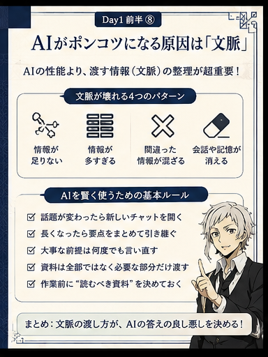
Day1前半⑧ AIがポンコツになる原因は「文脈」
文脈（コンテキスト）とは、AIが仕事をするための“机の上の資料”。多ければ多いほど良いわけではありません。
- 今回使う文章・画像・URLだけ渡す
- 絶対に守ってほしい条件は最初か最後にもう一度書く
- 長い会話になったら「ここまでの決定事項をまとめて」と頼む
- 話題が大きく変わったら新しいチャットにする
- 古い資料や間違った情報を混ぜない
AIが長い会話で急にズレるときは、AIの“頭が悪くなった”というより、必要な情報が埋もれた／余計な情報が増えた可能性を疑います。
森「カルテを全部机に積めば診断しやすくなる、とは限らない。必要な情報を選ぶのも仕事だよ。」
敦「AIも同じで、“今回必要な資料”を絞った方が迷いにくいんですね。」
⑧ 1回でダメでもOK。会話しながら直す
AIは「一発で完璧な答えを出させるゲーム」ではありません。違うところを短く伝えて、2回・3回と直せばOKです。
1まず頼むざっくりでいい
2見る良い・悪いを判断
3直す「ここを短く」
4確定最後は人が確認
太宰「1回で微妙だった。AI、使えないね。」
中也「お前が“何が微妙か”言ってねぇからだ。『長い』『固い』『この部分だけ残せ』って言え。」
敦「AIは答えを受け取るだけじゃなく、会話しながら形にしていく道具なんですね。」
今日のゴール：
「AIを難しく考えず、まずGeminiを使ってみる。そしてAIに上手に仕事を頼む基本を覚える」
参考動画（Day1 前半）
元の学習用リンク。内容を確認したいときに開けます。
DAY1 後半 / AI検索と人間らしい文章
検索で1位を取るだけじゃない。
これからは「AIに選ばれる情報」を作る。
難しい横文字はあと回し。まずは「AIに見つけてもらう」「信じてもらう」「自分にしか書けないことを入れる」の3つだけ覚えます。
これからは、SEOだけでなく「AIに選ばれる情報設計」が重要です。
その決め手は、一次情報・独自性・人間らしさです。
3
AIに見つけてもらう情報の作り方
まずここだけ
① 検索のゴールが変わってきている
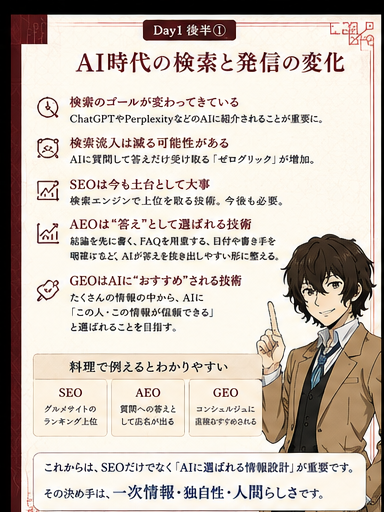
Day1後半① AI時代の検索と発信の変化
昔：Googleで上の方に出る → 人がサイトを開く。
これから：ChatGPTやPerplexityなどのAIが、質問に対して情報をまとめて紹介する場面が増えます。
🔍 従来の検索検索 → サイトを開く → 読む。
🤖 AI検索質問 → AIがまとめる → その場で答えを読む。
📉 ゼロクリックサイトを開かず答えだけ受け取ることが増える。
🧱 SEOはまだ必要AI以前の土台として、検索に読まれる状態は今後も大切。
太宰「じゃあGoogleで1位なら、もう勝ちってことじゃないの？」
中也「そこで思考停止すんな。これからは“AIが誰を紹介するか”まで考えろって話だ。」
敦「検索順位だけじゃなく、“AIの答えの中に入る”ことも目標になるんですね。」
横文字は料理で覚える
② SEO・AEO・GEOは何が違う？
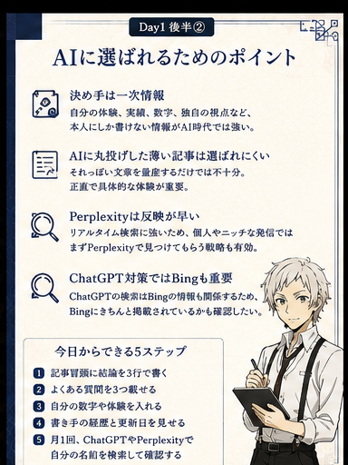
Day1後半② AIに選ばれるためのポイント
SEOグルメサイトのランキングで上位に入る。
AEO「駅前でおすすめの店は？」という質問の答えに店名が出る。
GEOコンシェルジュに「この店がいいですよ」と直接おすすめされる。
AEOは、結論を先に書く・FAQを置く・日付や書き手を見せるなど、AIが「答え」を抜き出しやすくする考え方。
GEOは、AIに「この人・この会社・この情報は信頼できる」と理解・推薦してもらうための考え方です。
暗記しなくてOK： SEO＝見つかる、AEO＝答えに入る、GEO＝おすすめされる。まずはこの3行で十分。
いきなり記事を増やさない
③ LLMO対策は「今どう見られているか」を知るところから
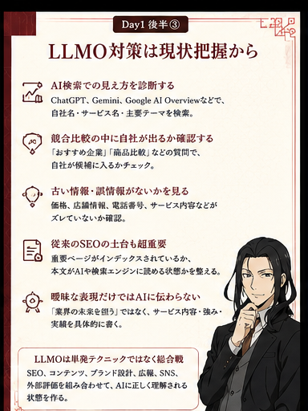
Day1後半③ LLMO対策は現状把握から
LLMOは、ChatGPTやGeminiなどのAIに、自分・会社・サービスを正しく理解してもらうための取り組み、と考えれば十分です。
- 自社名・サービス名をAIで検索し、正しく説明されるか確認する
- 「おすすめ」「比較」の質問で、自社が候補に入るか見る
- 価格・住所・電話番号・サービス内容など古い情報がないか確認する
- 重要ページが検索エンジンに登録され、本文が読める状態か確認する
- AIが引用しているメディアやサイトを記録する
森「治療を始める前に診察をするだろう？ LLMOも同じだよ。まず“今どう見えているか”を診る。」
敦「記事を100本増やす前に、現在地の確認が先なんですね。」
AI時代の一番大事な材料
④ 一次情報・独自性・外からの評価を増やす
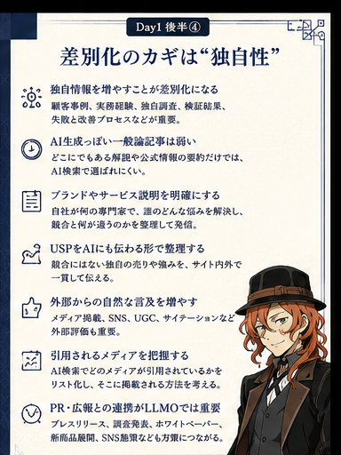
Day1後半④ 差別化のカギは独自性
🧠 一次情報自分でやった体験、実績、数字、検証結果、失敗と改善。
💎 独自性「誰でも書ける話」ではなく、自分だから言える内容。
🏷️ 明確な説明誰に何を提供し、何が強みで、競合と何が違うかを書く。
🌐 外部評価メディア、SNS、UGC、サイテーション、PRなど自然な言及。
「業界の未来を担う」「最高のサービスです」だけではAIにも人にも伝わりにくいです。数字・事例・具体的な強みに置き換えます。
△ 曖昧
「お客様に寄り添う高品質なサービスです」
◎ 具体的
「○○業界で20件を支援。平均△日で初回案を提出。失敗した施策と改善結果も公開」
中也「“すごいです”って自分で言うだけじゃ弱ぇ。何をやって、どうなったか出せ。」
太宰「つまり黒歴史も一次情報？」
中也「改善まで書けるなら、むしろ強ぇよ。」
4
AIでブログを書いて「人間らしい文章」に直してみる
実践①
⑤ AI文章は“平均的でまっすぐ”になりやすい
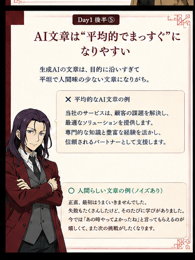
Day1後半⑤ AI文章の弱点を知る
生成AIは、目的にまっすぐ答えようとするので、きれいだけど平坦・どこかで見た文章になりやすいことがあります。
まずやる：
Geminiなどに「初心者向けに、○○について800字のブログを書いて」と頼み、最初の文章を保存します。
この“普通の文章”が比較用のスタート地点です。
与謝野「整ってはいる。でも“この人が書いた”感じが薄い文章はあるね。」
谷崎「悪い文章というより、まだ“本人の材料”が入ってない状態なんですね。」
実践②
⑥ 良いノイズを足すと文章の印象が変わる
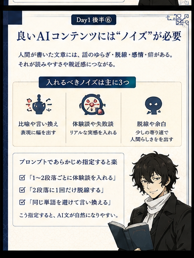
Day1後半⑥ 良いAIコンテンツには“ノイズ”が必要
ここでいうノイズは、邪魔な文章ではありません。人間が自然に持つ「ゆらぎ・癖・寄り道」です。
🎨 比喩・言い換え同じ言葉を連発せず、たとえ話で幅を出す。
😅 失敗談うまくいかなかった経験と、そこから変えたことを書く。
🌊 少しの脱線本題を壊さない程度に、感情や気づきを入れる。
🗣️ 本人の言葉「自分はこう感じた」を材料としてAIに渡す。
指示を1つだけ追加：
「同じ内容のまま、私が実際に失敗した話を1つ入れ、少しだけ脱線し、比喩を1つ使って書き直して」
実践③
⑦ “人間っぽく偽装”するのではなく、本物の体験を入れる
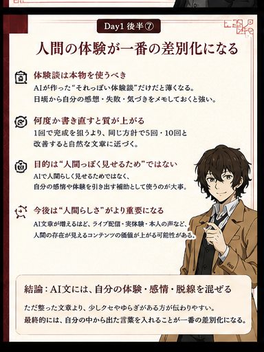
Day1後半⑦ 人間の体験が一番の差別化になる
AIに架空の武勇伝を作らせるのではなく、自分のメモ・数字・感想・失敗・迷ったことを渡します。これが一次情報になります。
- 「最初はこう思っていた」を書く
- 「実際にやったら、ここで失敗した」を書く
- 数字や期間があれば入れる
- 「だから次はこう変えた」で終える
- 普段から小さな気づきをメモしておく
敦「完璧な成功談じゃなくてもいいんですね。」
太宰「むしろ失敗の方が、私は得意だけど？」
中也「お前の場合は量が多すぎる。読者に役立つ失敗だけ選べ。」
実践④ / 今日のワーク
⑧ AIでブログを作り、指示で文章がどう変わるか体験する
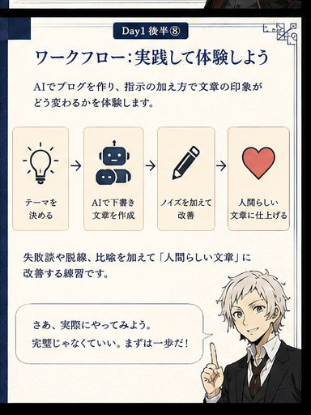
Day1後半⑧ ワークフロー：実践して体験しよう
1テーマ自分が少し知っている話を選ぶ
2AIで下書きまず普通に書かせる
3ノイズ追加体験・失敗・比喩・脱線を足す
4比較・改善最初と最後を読み比べる
今日の練習：
AIでブログを作り、指示の加え方で文章の印象がどう変わるかを体験します。
失敗談や脱線、比喩を加えて「人間らしい文章」に改善します。
1回目
「○○について初心者向けのブログを書いて」
2回目以降
「私の失敗談を入れて」「少し脱線して」「この比喩を使って」「もっと私の口調に寄せて」
5回・10回と直して構いません。 一発で完成させるより、比較しながら「自分らしい」を見つける方が、この練習では大事です。
太宰「最初から名文を書かせるんじゃないんだ？」
中也「下書きはAIにやらせろ。そこから“お前にしかない材料”を足すんだよ。」
敦「AIが作者ではなく、下書きと編集を手伝う相棒になるんですね。」
今日のゴール：
「これからは、SEOだけでなく『AIに選ばれる情報設計』が重要。
その決め手は、一次情報・独自性・人間らしさ。」
参考動画（Day1 後半）
今回の学習元として渡された3本です。
DAY2 前半 / AI×CANVA 超・初心者向け
難しい理論は後回し。
今日は「触る → 作る → 保存する」まで行く。
PCが苦手でも大丈夫。Canvaは「白紙から全部作るソフト」ではなく、テンプレートや素材を使って組み立てる道具です。AIはその前段で文章・画像・案出しを手伝います。
AI初心者向けの生成AI活用と、Canvaの基本操作から図形・フレーム・レイヤーまでを実践的に学びます。
どちらも、難しい理論より「まず触って覚える」ことを重視します。
5
まずAIとCanvaを“怖くない道具”にする
Day2前半①AI×Canvaを始めよう
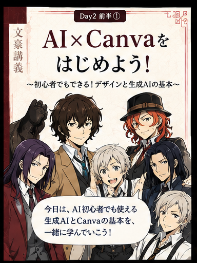
Day2前半① AI×Canvaを始めよう
今日のゴールは「デザインのプロになる」ではありません。 自分で1つ作って、保存できればまず合格です。
太宰「Canvaって、センスがないと触っちゃいけない感じしない？」
中也「勝手に難しくすんな。テンプレ選んで文字と写真を替えるだけでも立派な制作だ。」
敦「最初から白紙で作らなくていい、って分かるだけでかなり安心しますね。」
こんな人ほど「まず触る」でOK
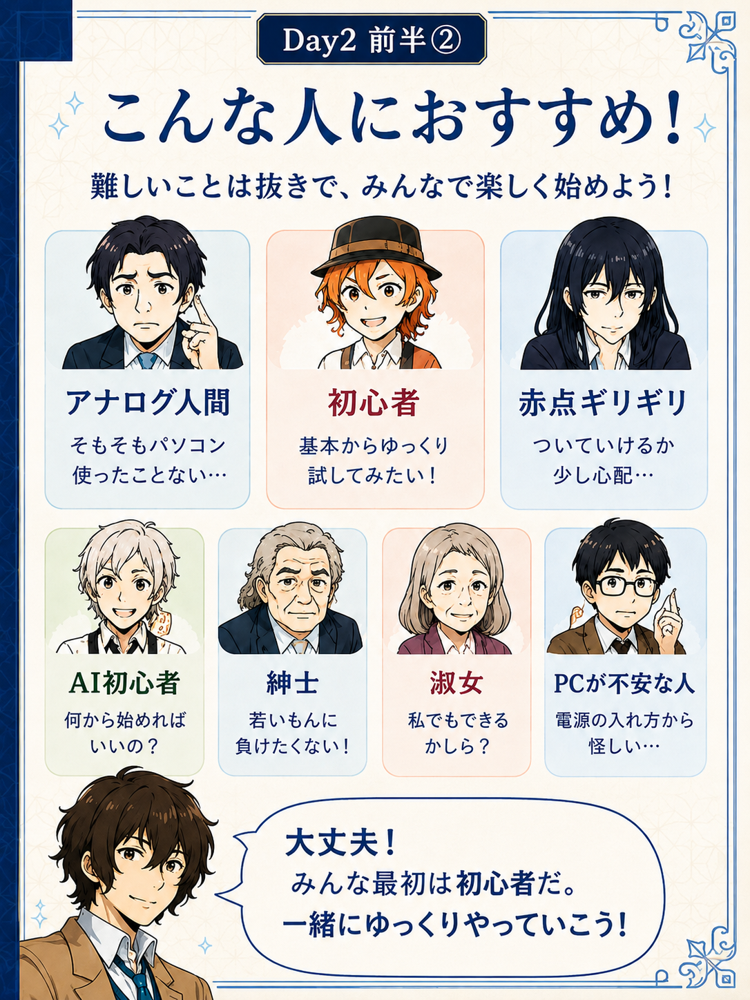
Day2前半② アナログ人間でも大丈夫
💻 PCが苦手クリック・ドラッグ・文字入力ができれば始められる。
🎨 センスに自信なしテンプレートを土台にして、差し替えるだけでいい。
🤖 AI初心者まずは「文章を3行にして」など小さいお願いから。
🧓 操作を覚えにくい同じ手順を何回か繰り返す方が早い。
与謝野「覚えてから使うんじゃない。使いながら覚えるんだよ。」
谷崎「失敗しても自動保存されるので、壊す心配をしすぎなくて大丈夫ですね。」
AI→Canvaの基本ワークフロー
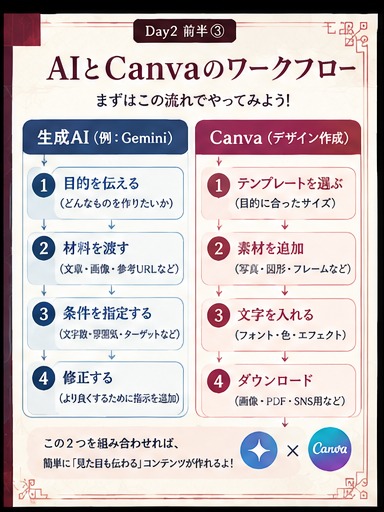
Day2前半③ AIとCanvaのワークフロー
1目的何を作るか決める
2AI文章・案・画像を作る
3Canvaサイズとテンプレを選ぶ
4編集素材・文字・写真を配置
5保存ダウンロードする
森「AIに全部デザインさせるのではなく、案を出す役と整える役を分けると分かりやすいね。」
敦「AIが下ごしらえ、Canvaが盛り付け、みたいな感じですね。」
中也「その例えなら覚えやすいな。」
生成AIとCanvaの役割を分ける
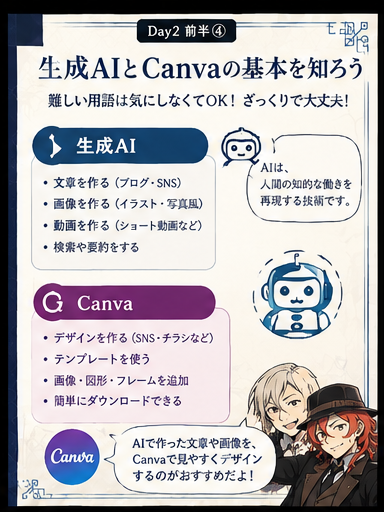
Day2前半④ 生成AIとCanvaの基本
🤖 生成AI文章、要約、アイデア、画像案など「材料」を作る。
🎨 Canvaテンプレート、素材、文字、写真を組み合わせて見た目を整える。
迷ったら：AIに「Instagram投稿用に、見出し・本文・画像案を考えて」と頼み、その内容をCanvaに移すだけでも立派な練習です。
6
Canvaの基本操作を“手で覚える”
Day2前半⑤専門用語は、かんたんな言葉に置き換える
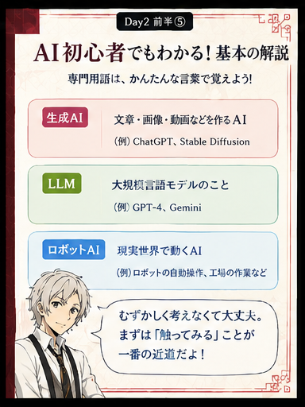
Day2前半⑤ AI初心者でも分かる基本用語
生成AI文章・画像・動画などを新しく作るAI。
LLM文章をたくさん学習して、次の言葉を予測する仕組み。
テンプレート完成形に近い“ひな形”。最初から配置ができている。
素材写真・イラスト・図形・アイコンなど、デザインに置く部品。
太宰「横文字を全部覚えてから始める必要は？」
中也「ねぇ。分からん言葉が出た時に聞け。先に手を動かせ。」
Canvaの基本操作：最初はこの順番
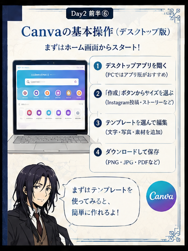
Day2前半⑥ Canvaの基本操作
1開くブラウザ版・アプリ版から開始
2作成用途・サイズを選ぶ
3テンプレ近い雰囲気を選ぶ
4編集文字・写真・素材を替える
5保存共有→ダウンロード
- 文字は「テキスト」から追加
- 写真は「アップロード」から追加
- 素材検索で写真・イラスト・背景を探す
- 写真は背景として設定して全面配置できる
- ダブルクリックや切り抜きで写真位置を調整する
- 文字色・フォント・影・袋文字などを変えられる
- ズームで作業画面の拡大縮小ができる
- 完成したら「共有」→「ダウンロード」で保存
谷崎「テンプレートは“完成品を盗む”んじゃなくて、配置の見本を借りる感覚ですね。」
与謝野「王冠マークが付いた素材は有料の場合がある。無料版なら王冠なしを選べばいいよ。」
図形・フレーム・レイヤーを覚えると一気に楽になる
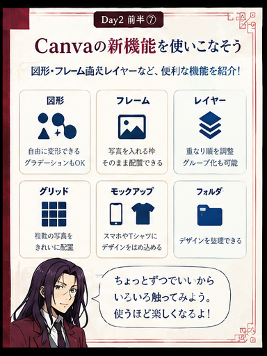
Day2前半⑦ Canvaの便利機能・新しい使い方
◼️ 図形四角・丸など。縦横比を自由に変えやすく、グラデーションや縁取りも使える。
🖼️ フレーム写真を入れる“枠”。写真を重ねると自動ではめ込める。
🔲 グリッド画面を分割し、複数写真をきれいに並べる。
🧱 レイヤー素材の前後関係。後ろに隠れた物を前へ出せる。
🔗 グループ化複数パーツを1つの塊としてまとめて動かす。
📱 モックアップスマホやTシャツなどに自分のデザインをはめ込む。
クイックフローは図形同士を矢印でつないで図解を作る時に便利。邪魔な時は無効にできます。
整理も機能のうち。 デザインには名前を付け、用途ごとにフォルダーへまとめると「どこ行った？」が激減します。
森「レイヤーは机の上に紙を重ねるのと同じだよ。上の紙ほど手前に見える。」
太宰「それなら分かる。私の書類は全部一番下だけど。」
中也「整理しろ。」
AI×Canvaで1個作って終わる
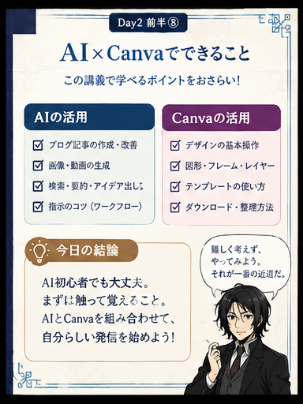
Day2前半⑧ AI×Canvaまとめ
1テーマ投稿内容を決める
2AI見出しと本文案を出す
3Canvaテンプレを選ぶ
4編集文字・写真・図形を替える
5保存PNG等でダウンロード
今日の実践：
① Geminiなどで「SNS投稿の見出しを3案」と頼む。
② Canvaでテンプレートを1つ選ぶ。
③ 文字を差し替える。
④ 写真か図形を1つ入れる。
⑤ ダウンロードして完成。
敦「全部の機能を覚えてなくても、1個完成させればいいんですね。」
中也「そうだ。触らずに覚えようとする方が無理だ。」
太宰「じゃあ失敗しても？」
与謝野「直せばいい。Day1で覚えたでしょ。」
Day2前半の結論：
「AIで材料を作り、Canvaで見せ方を整える。
どちらも、難しく考えるより“まず触って1個完成させる”のが最短。」
DAY2 後半 / SEO記事づくり 超・初心者向け
記事を書く前に、
「検索する人は何を知りたい？」から考える。
SEOはキーワードをたくさん入れるゲームではありません。検索した人の悩みを想像し、誰に・何を・どの順番で届けるかを先に設計します。
今日の中心：
「検索意図 → ペルソナ → 情報収集 → 構成設計 → AIで下書き → 自分で仕上げ → 公開」
この順番を覚えれば、いきなり本文を書いて迷子になるのを減らせます。
7
まず「検索する人の気持ち」を読む
Day2後半①
SEOで一番大事なのは「検索意図」
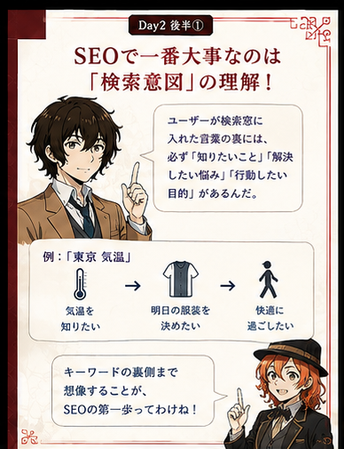
Day2後半① SEOで一番大事なのは検索意図
検索意図＝「その言葉を検索した本当の理由」。 キーワードの表面だけでなく、「この人は結局どうしたいの？」まで考えます。
表面だけ
「東京 気温」→ 気温の数字だけ書く
一歩深く
「明日の服装を決めたいのかも」→ 気温＋服装の目安まで考える
太宰「検索された言葉を、そのまま説明すればいいんじゃないの？」
中也「そこだけ見てるからズレるんだよ。“なぜ検索したか”まで想像しろ。」
敦「キーワードじゃなくて、その向こう側にいる人を見るんですね。」
Day2後半②
検索クエリは、ざっくり5種類
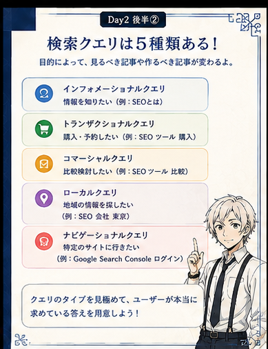
Day2後半② 検索クエリは5種類
情報知りたい
例：SEOとは
購入・予約行動したい
例：SEOツール 購入
比較選びたい
例：SEOツール 比較
地域近くを探す
例：SEO会社 東京
特定サイトそこへ行きたい
例：Search Console ログイン
目的が違えば、作るページも変わります。知りたい人には解説、比較したい人には比較、買いたい人には商品・申込ページ。 全部を1記事に押し込む必要はありません。
森「薬を探している人と、病気の意味を知りたい人に、同じ説明をしても仕方がないだろう？」
敦「検索も“何をしたい人か”で必要な内容が変わるんですね。」
Day2後半③
検索意図を見抜く方法は2つ
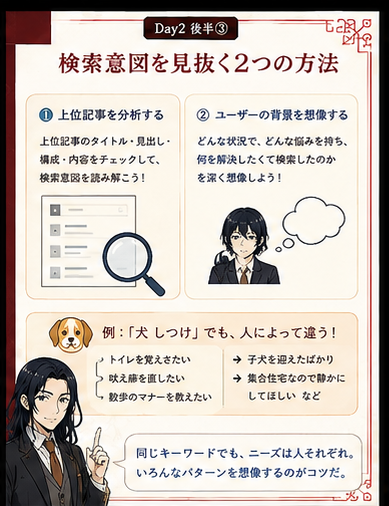
Day2後半③ 検索意図を見抜く2つの方法
🔍 ① 上位記事を見るタイトル・見出し・共通して書かれている内容を見る。
🧠 ② 人の背景を想像するどんな状況で、何に困り、読んだ後どうなりたいか考える。
上位記事の丸写しはしません。 「なぜこの見出しが必要なのか」「読者は次に何を知りたいか」を考える材料にします。
例：「犬 しつけ」
トイレ、吠え癖、散歩、子犬、集合住宅など、人によって困りごとは違います。同じ言葉でも答えが1つとは限りません。
Day2後半④
公開したら、数字で答え合わせ
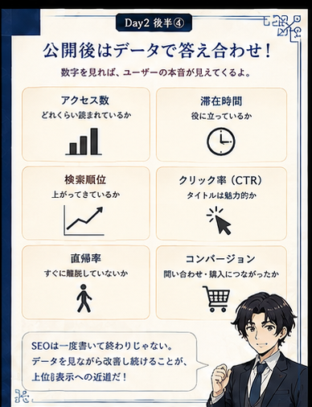
Day2後半④ 公開後はデータで答え合わせ
アクセス数どれくらい読まれている？
検索順位狙った検索で出ている？
クリック率検索結果で選ばれている？
滞在・行動すぐ離れていない？ 次の行動につながった？
GoogleアナリティクスやSearch Consoleなどを使い、公開 → 確認 → 修正を繰り返します。SEO記事は「出したら終了」ではありません。
太宰「公開した。お疲れさま。解散。」
与謝野「そこからが経過観察だよ。数字を見て、効いてなければ直す。」
Day2後半⑤
SEOで忘れない3つの注意
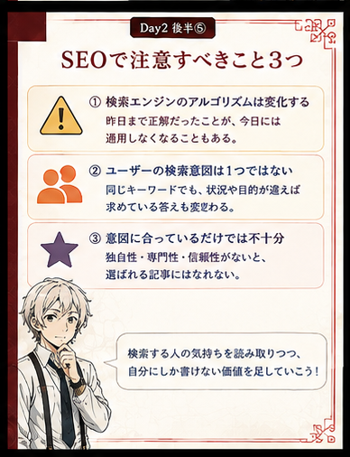
Day2後半⑤ SEOで注意すること
- 検索エンジンの仕組みは変わる。昔の必勝法を永久ルールだと思わない
- 検索意図は1つとは限らない。複数の読者パターンを考える
- 検索意図に合うだけでなく、独自性・専門性・自分の体験を足す
AIに丸投げした平均的な記事だけでは弱くなりやすい。 Day1で学んだ一次情報や本人の言葉を、ここでも使います。
8
ペルソナと構成を作ってからAIに書かせる
Day2後半⑥
生成AIで「読者役」を作る＝ペルソナ
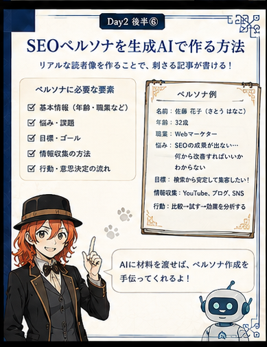
Day2後半⑥ SEOペルソナを生成AIで作る
ペルソナは「30代・女性」のようなプロフィール表ではなく、何に悩み、何を知り、最後にどうなりたい人かまで考えた読者像です。
材料に使えるものSearch Consoleの検索語、アクセスデータ、広告の検索語。
さらに強い材料SNSの生の声、競合記事、実際の質問や問い合わせ。
AIに何も渡さず「ペルソナを作って」だけだと、一般的で薄くなりがちです。実際のデータを材料として渡し、3パターンくらい作ると比較しやすくなります。
敦「ペルソナは答えなんですか？」
森「いや、仮説だよ。記事を読ませて反応を想像し、最後は実際の数字で確かめる。」
Canvaの使いどころ：前半で覚えた図形・フレーム・グループ化を使えば、ペルソナ3人を“読者カード”として並べて見える化できます。
Day2後半⑦
本文より先に「記事の設計図」を作る
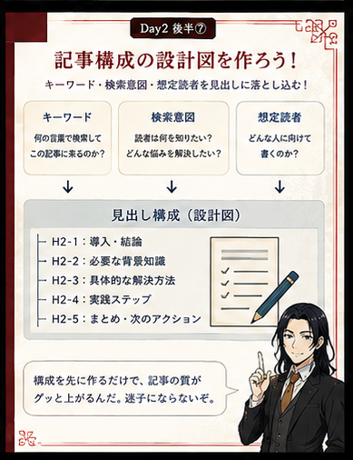
Day2後半⑦ 記事構成の設計図を作る
構成＝H2・H3などの見出しを先に並べた設計図。 いきなり本文を書くより、脱線・重複・説明不足を減らせます。
キーワード何の検索で読まれたい？
検索意図読者は何を知りたい？
想定読者誰に、どこまで簡単に説明する？
見出しどの順番なら迷わず理解できる？
- 見出しだけ読んでも話の流れが分かるか
- 検索意図に答えているか
- 初心者に難しすぎないか
- 同じ説明を何度もしていないか
- 各見出しに「何を書くか」を1〜2行メモする
Canvaの使いどころ：クイックフローや図形を使って「検索意図 → ペルソナ → H2 → H3」を矢印でつなぐと、文章を書く前に全体像を確認できます。
Day2後半⑧ / 今日の実習
記事づくりの流れを7ステップで覚える
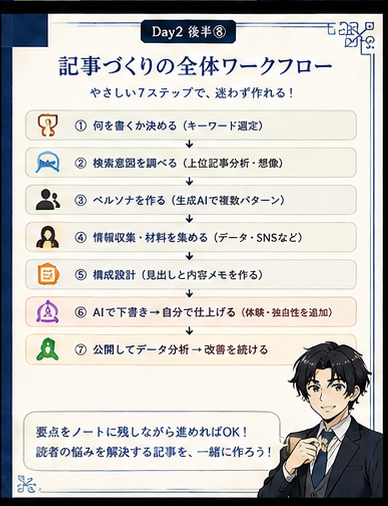
Day2後半⑧ 記事づくりの全体ワークフロー
1検索意図何を知りたい？
2ペルソナ誰が読む？
3情報収集何が必要？
4構成設計順番を決める
5AI下書き文章化する
6自分で仕上げ体験・独自性
7公開・改善数字で確認
実習で大事：
AIとのチャットが長くなると「どこで何を決めた？」が分からなくなります。
「検索意図」「ペルソナ」「採用した見出し」「直した理由」だけでも、ノートに短く残しながら進めます。
太宰「全部AIに“いい記事書いて”で終わらせちゃダメ？」
中也「Day1から何を聞いてたんだ。順番に材料を決めて渡せ。最後は自分で仕上げろ。」
敦「検索意図と読者像を先に決めるから、AIの下書きもズレにくくなるんですね。」
谷崎「途中の決定をノートに残しておけば、AIとの会話が長くなっても戻れます。」
今日のゴール：
記事を書く前に「何を書くか」「誰に届けるか」「読者は何を知りたいか」を整理する。
検索意図 → ペルソナ → 情報収集 → 構成設計 → AIで下書き → 自分で仕上げ → 公開、の流れを理解する。